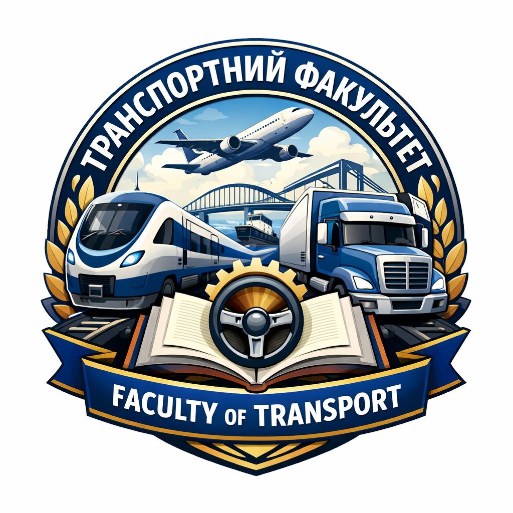
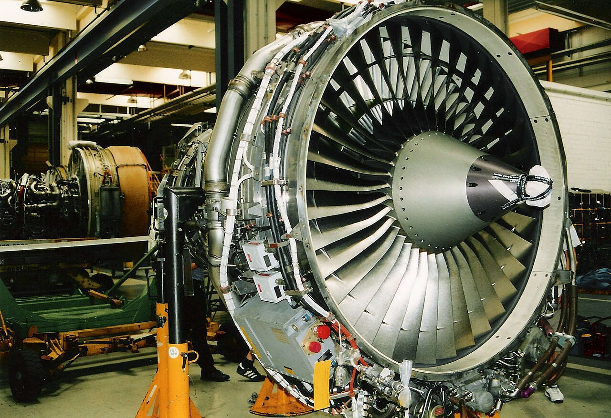
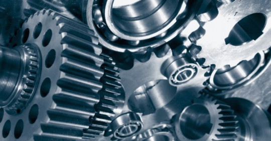

Faculty of Transport

Транспорт - це рух, а рух - це життя!
Місія факультету - підготовка висококваліфікованого фахівця та всебічно розвиненої особистості, здатної вирішувати складні проблеми у галузі техніки та технологій транспорту як однієї з найважливіших галузей вітчизняної та світової економіки. Національний університет "Запорізька політехніка" є єдиним в Запорізькій області закладом вищої освіти, що готує фахівців для підприємств транспортного машинобудування, автомобільного, залізничного та авіаційного транспорту, транспортно-логістичного сервісу, а також транспортних та логістичних підрозділів підприємств, організацій та установ усіх видів та форм власності.
Склад факультету

Кузькін Олексій Феліксович
декан транспортного факультету, професор кафедри «Транспортні технології»

Каплуновська Алла Миколаївна
Заступник декана транспортного факультету, старший викладач кафедри «Транспортні технології»
Структура факультету

Кафедра "Автомобілі, теплові двигуни та гібридні енергетичні установки"
Кафедра здійснює підготовку бакалаврів, магістрів та докторів філософії за освітніми програмами транспортного спрямування спеціальності G11 Машинобудування (за спеціалізаціями). Рік заснування кафедри - 1944.
донатитиКафедра "Транспортні технології"
Кафедра здійснює підготовку бакалаврів за освітніми програмами спеціальності J6 Авіаційний транспорт, бакалаврів та магістрів за освітніми програмами спеціальностей J7 Залізничний транспорт, J8 Автомобільний транспорт. Рік заснування кафедри - 1972.
донатити
Кафедра "Теоретична та прикладна механіка"
Кафедра забезпечує викладання навчальних дисциплін з теоретичної та прикладної механіки, опору матеріалів, теорії механізмів і машин для спеціальностей інженерно-технічного спрямування. Рік заснування кафедри - 1903.
донатити